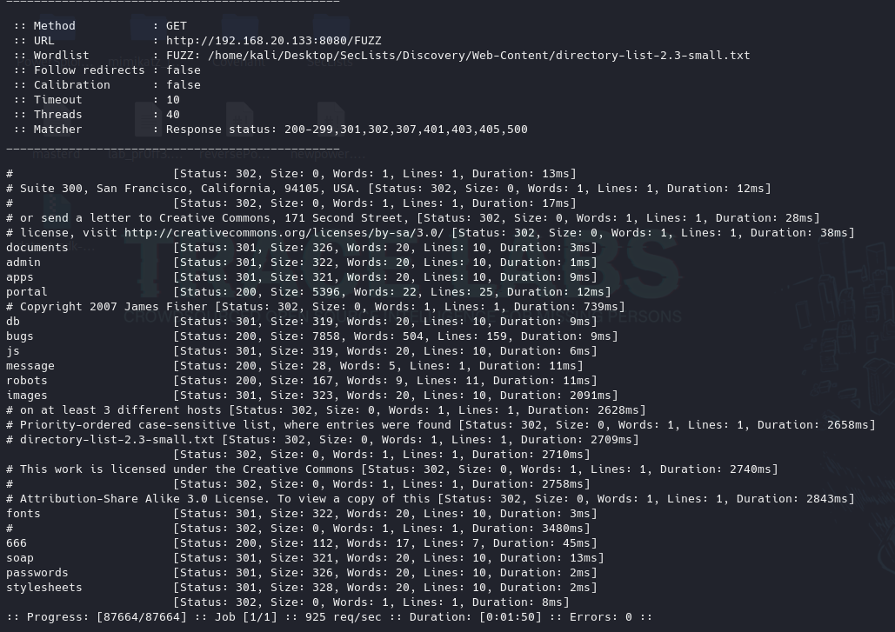
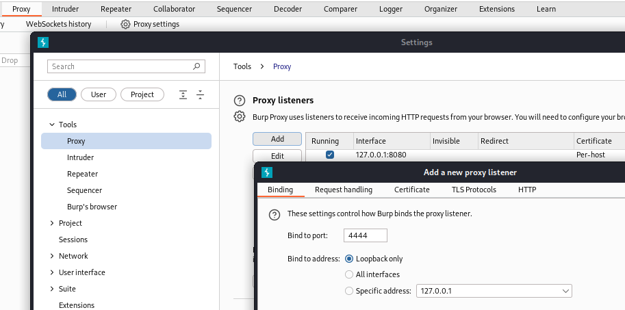
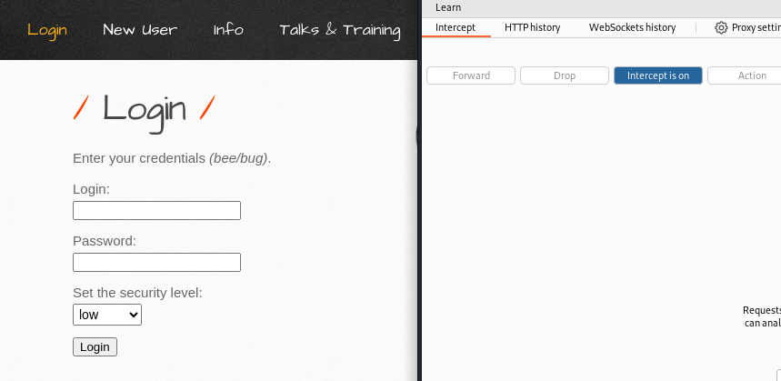
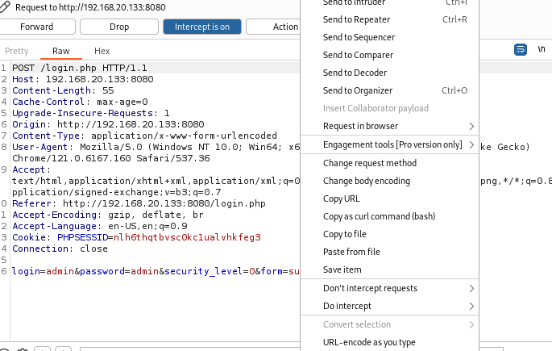
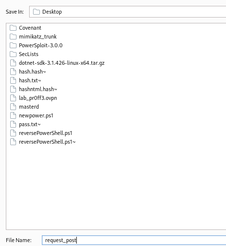
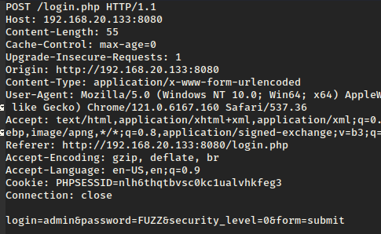
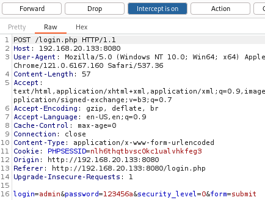
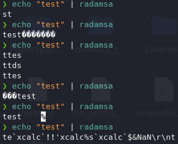
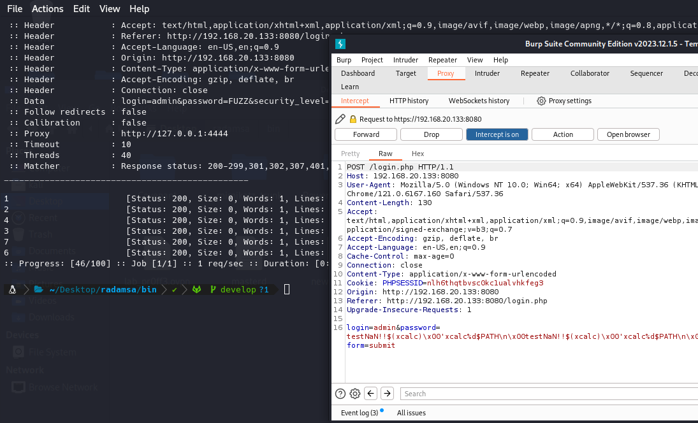

¿En qué consiste?
Estas técnicas se basan en enviar diferentes inputs a una aplicación web o software para ver como responde.
Cogemos un diccionario de palabras raras o mal formadas con caracteres etc y se van a ir mandando a diferentes campos de entrada en la aplicación.
El objetivo principal en Hacking suele ser “romper” la aplicación, dejarla fuera de disponibilidad lo que significa que en algún lado se está provocando una excepción que no es controlada en el código de la aplicación.
Otro motivo puede ser encontrar elementos ocultos.
https://github.com/xmendez/wfuzz
Viene por defecto en Kali.
Podemos realizar descubrimiento de recursos como con Gobuster:
ffuf -u http://192.168.20.133:8080/FUZZ -w /home/kali/Desktop/SecLists/Discovery/Web-Content/directory-list-2.3-small.txt

Para poder ver las peticiones que hace FFUZZ podemos proxificar la petición por ejemplo con BurpSuite.

Y en FFUF indicamos el proxy:
ffuf -u http://192.168.20.133:8080/FUZZ -w /home/kali/Desktop/SecLists/Discovery/Web-Content/directory-list-2.3-small.txt -x http://127.0.0.1:4444
Si queremos que además realice el fuzzing no solo en la raíz que le indiquemos sino que además recorra de nuevo todo lo que encuentre con todos los parámetros del diccionario:
ffuf -u http://192.168.20.133:8080/FUZZ -w /home/kali/Desktop/SecLists/Discovery/Web-Content/directory-list-2.3-small.txt -recursion
Esto hace una identificación de los apartados principales que les responde, luego realiza de nuevo apartado por apartado lo mismo.
Podemos especificar que busque un archivo específico:
ffuf -u http://192.168.20.133:8080/FUZZ -w /home/kali/Desktop/SecLists/Discovery/Web-Content/directory-list-2.3-small.txt -recursion -e .png
Otra cosa muy interesante es el uso de varios diccionarios de manera simultánea.
ffuf -u http://192.168.20.133:8080/wordlist1/wordlist2 -w /home/kali/Desktop/SecLists/Discovery/Web-Content/directory-list-2.3-small.txt:wordlist1 /home/kali/Desktop/SecLists/Discovery/Web-Content/directory-list-1.0.txt:wordlist2
También podemos inyectar estas palabras en otros apartados del código fuente y no únicamente en el GET:
Con burpsuite vamos a interceptar una página como la siguiente:


Lo copiamos a un archivo.

Modificamos los apartados de usuario y contraseña en los que podemos indicar que utilice dos diccionarios uno de usuarios y otro de contraseñas:

ffuf -request request_post -w /home/kali/Desktop/SecLists/Passwords/2020-200_most_used_passwords.txt -x http://127.0.0.1:4444

Lo interesante en el fuzzing lo más interesante es intentar romper el servicio:
Podemos utilizar un programa llamado Radamsa
https://gitlab.com/akihe/radamsa
Muta una entrada mediante diferentes técnicas de forma que introducimos una palabra cualquiera y lo va mutando metiendo caracteres raros para poder explotar la aplicación.
$ # please please please fuzz your programs. here is one way to get data for it:
$ sudo apt-get install gcc make git wget
$ git clone https://gitlab.com/akihe/radamsa.git && cd radamsa && make && sudo make install
$ echo "HAL 9000" | radamsa
$ git clone https://gitlab.com/akihe/radamsa.git
$ cd radamsa
$ make
$ sudo make install # optional, you can also just grab bin/radamsa
$ radamsa --help
Una vez instalado en el directorio bin>
echo "test" | radamsa

Otro uso:
echo "test" > texto.txt
radamsa texto.txt
En combinación con ffuf:
ffuf -request /home/kali/Desktop/request_post --input-cmd 'radamsa /home/kali/Desktop/texto.txt' -x http://127.0.0.1:4444

Por defecto ffuf limita las peticiones a 100 pero se puede modificar:
ffuf -request /home/kali/Desktop/request_post --input-cmd 'radamsa /home/kali/Desktop/texto.txt' -x http://127.0.0.1:4444 -input-num 1000
Si lo que buscamos son status code concretos podemos filtrarlos con algunas opciones de ffuf:
ffuf -h